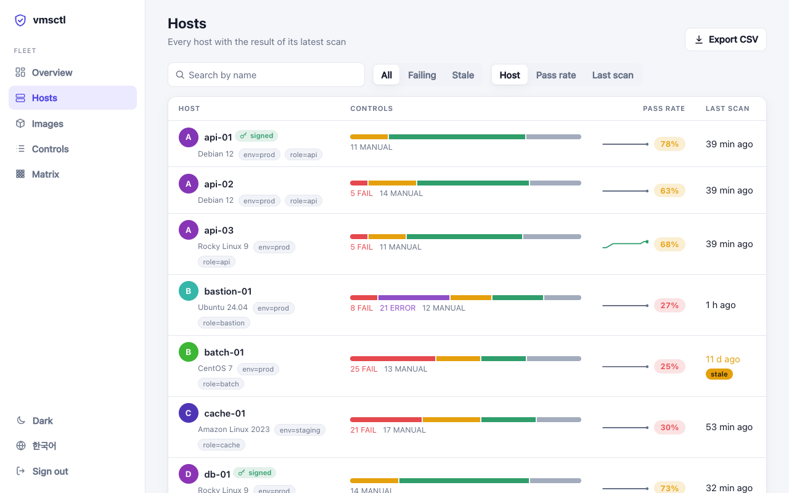
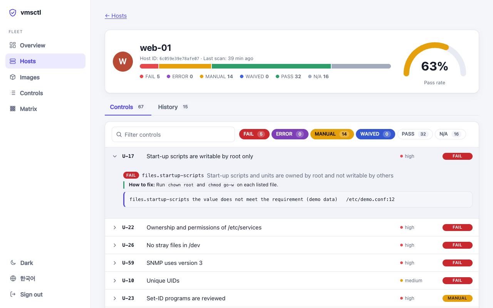
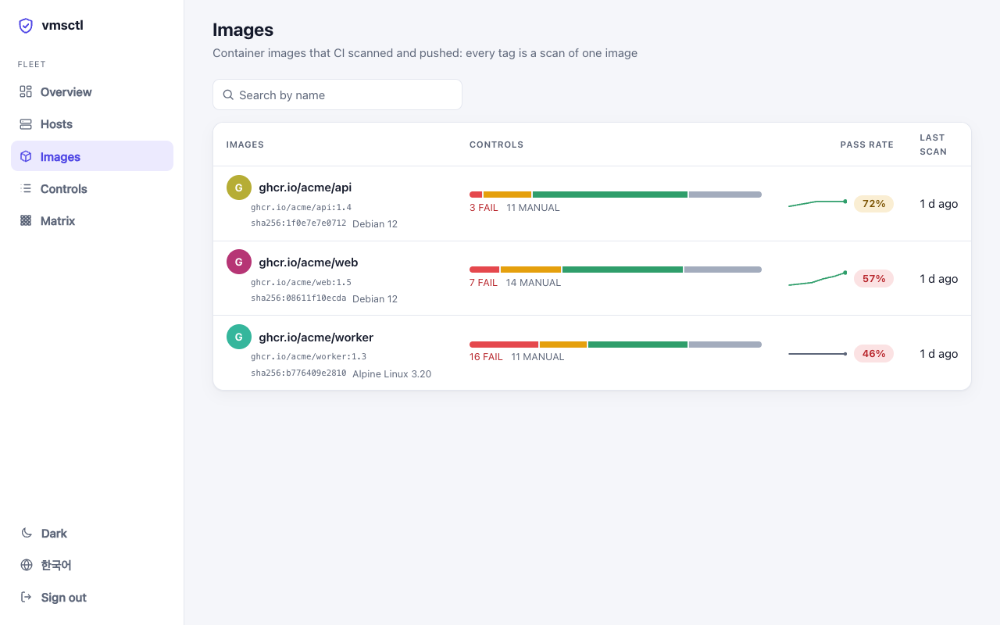

Check your Linux servers like you lint your code
One static binary reads a host's security configuration and gives one result per control, with the value, the file and the line behind every verdict. It only reads: it never changes the host.
$ docker run --rm -v /:/host:ro ghcr.io/with-developer/vmsctl:0.41.0 scan --root /host

You can trust a result you can check
Most scanners give a verdict and leave you to find out why. vmsctl is built the other way round.
Evidence for every verdict
The value, the file and the line it came from, and whether it was set explicitly or is a default. There is no FAIL without a reason.
No guessed PASS
When a control cannot be decided (an unreadable file, a cut-off scan) the result is ERROR or MANUAL. Configuration is read the way the program reads it: PAM like libpam, login.defs like shadow-utils, shell files like bash.
Observation only
Rules are data, not scripts, so they cannot run commands. Password hashes, keys and tokens never appear in a result.
Run it on a host, get a clear list
Run it as root. The first profile is the KISA technical vulnerability assessment guide for critical infrastructure (Unix, U-01 to U-67, 2026 edition); other baselines are added as profiles over the same checks.
- Hosts and images. A running system, a filesystem mounted elsewhere, or a container image straight from a
docker savearchive. - Many outputs. Table, JSON (with a schema), SARIF, JUnit, and one self-contained HTML report for many hosts.
- Waivers with a reason. Accept a finding in
vmsctl.yamlwith an expiry date, and the result keeps its evidence.
$ sudo vmsctl scan vmsctl v0.41.0 · kisa-2026 · web-01 (Ubuntu 24.04) ✗ FAIL U-02 Password policy [high] ✗ accounts.password-min-length pam.password_quality.settings.minlen: not set ✗ FAIL U-12 Session timeout [low] ✗ accounts.session-timeout-set not set; expected a value matching [1-9][0-9]* ✗ FAIL U-18 Ownership and permissions of /etc/shadow [high] ✗ files.shadow-perms /etc/shadow: root:shadow 0640 — mode 0640 exceeds 0400 ? MANUAL U-23 Set-ID programs are reviewed [high] ? files.review-setid /usr/bin/chage 2755 root … and 10 more kisa-2026: 67 controls — 7 FAIL, 10 MANUAL, 29 PASS, 21 N/A
One dashboard for every server
Hosts scan themselves and push the result to vmsctl server. It keeps the history and shows the pass rate over time, what failed most, what got worse since the last scan, and the evidence behind each result with how to fix it.

Search, filter by label, sort. Each host shows its latest result and a trend line.

The evidence behind every check, how to fix a failure, the scan history and a comparison with the scan before.

Every control on every host in one table. The hosts that fail most come first.

Container images your CI scans, with one history for each image.
The server never connects to a host
Hosts push their results. To scan one on demand, its vmsctl agent dials out and waits for a “Scan now” from the dashboard, and it can only be asked for a profile the host allows.
Signed results
A host can sign what it sends, so a result stays evidence of what that host said even if the server is compromised later. The server keeps a hash-chained audit log.
Try it with no host
Open the live demo in your browser, or run vmsctl server demo: it starts a server with a made-up fleet of twelve hosts and prints a token to sign in with. Korean and English, light and dark. Every check explains itself in Korean too: what it looks at, why, and how to fix it.
Gate the image before it ships
vmsctl scan --image-tar reads a docker save or OCI archive with no daemon and no registry, and gives the same result as a scan inside a container made from that image. The repository is also a GitHub Action: it installs a verified release, uploads SARIF to code scanning and fails the build at the severity you choose.
# any CI docker save app:1.4 -o app.tar vmsctl scan --image-tar app.tar --fail-on high # GitHub Actions - uses: with-developer/vmsctl@v0.41.0 with: image: app:ci fail-on: high sarif-file: vmsctl.sarif
Supported systems
Every distribution below is scanned in Docker, stock and hardened, in the project's own tests.
Get started in three steps
Releases are signed with Sigstore and carry build provenance and an SBOM.
Install
Download the installer, read it, then run it. It verifies the archive's SHA-256 (and the signature, when cosign is installed).
curl -fsSLO https://raw.githubusercontent.com/with-developer/vmsctl/v0.41.0/install.sh sudo sh install.sh -v v0.41.0
Or use a .deb or .rpm from the releases, the container image, or go install github.com/with-developer/vmsctl/cmd/vmsctl@v0.41.0.
Scan
One host, one report. For many hosts, save the JSON and build a single HTML report.
sudo vmsctl scan sudo vmsctl scan --format json --output web-01.json vmsctl report *.json --output report.html
See the whole fleet
Start with the demo. Then run your own server and push results from each host.
vmsctl server demo
# later: sudo VMSCTL_TOKEN=hlt_ing_... vmsctl scan --push https://vmsctl.example.org:8443